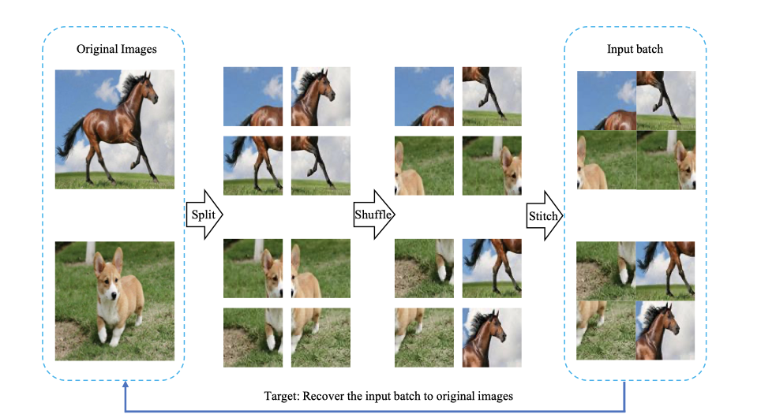

About
标题
Jigsaw Clustering for Unsupervised Visual Representation Learning
基于拼图聚类的无监督视觉表征学习
发表
CVPR 2021 Oral
作者
Pengguang Chen：香港中文大学
Shu Liu：香港中文大学Ph.D / Smartmore思谋科技
Jiaya Jia*：香港中文大学科学技术学院教授 / 微软亚洲研究所（香港）/ Smartmore思谋科技
团队
香港中文大学、 Smartmore思谋科技
代码
https://github.com/JiaResearch-Lab/JigsawClustering
Content
前置任务 for 无监督学习
- 图像内任务 intra-image tasks
- 着色 colorization
- 拼图 jigsaw puzzle
- 图像间任务 inter-image tasks
- 对抗学习 contrastive learning
拼图任务

-
把一个batch里的图像切割成若干patches
-
把patches随机打乱顺序，然后拼接成原图大小，作为batch输入模型
使用拼接（montage）的好处：
使用拼接的注意事项：
- 根据消融实验表明，切成2x2的patch效果最好，切太多会增加拼图难度导致学习失败
- 切割成有重叠部分的训练效果更好，因为有些图片变化太大。
网络设计
-
特征提取：可以为任意特征提取框架
以ResNet-50为例，其特征图为7x7
-
解耦模块（无参）：将提取出的特征分成 \(n \times m \times m\) 条，对应图像的patches
通过双线性插值（bilinear interpolation）将特征图补成8x8大小
然后使用平均池化来降采样特征图得到 \(n \times m \times m\) 条维度为 \(\hat{c}\) 的向量
-
MLP：用于聚类任务
将每条向量嵌入长度为c的两层多层感知机
-
FC：用于定位
同时使用一个全连接层作为分类器来得到 logits
损失函数
-
聚类分支（\(\cal{L}_{clu}\)）
作为一个有监督任务，使用对抗学习的方法，拉扯同图异图patches，使用余弦相似度度量patches的距离
-
定位分支（\(\cal{L}_{loc}\)）
作为一个分类任务，损失函数就用交叉熵损失
-
拼图任务的目标函数（\(\cal{L} = α \cal{L}_{clu} + β \cal{L}_{loc} \)）
本文实验中 α 和 β 都为1
实验
- 对比实验（linear evaluation）
- 拼图任务：JigPuz
- 聚类方法：DeepCluster、SeLa
- 对抗学习：SimCLR、MoCo
- 半监督学习
- 迁移学习
- 目标检测：[COCO]
- 图像分类：[CIFAR-10\CIFAR100]
分析
-
拼图输入
小图快，大图准；拼图又快又准。
-
数据增强（color jitter \ position）
-
切分操作
-
两个分支
聚类分支学习 instance- and image-level 特征
定位分支辅助学习细节位置信息
结论
：我们的方法训练的模型可以在训练过程中以单批方式学习图像内和图像间的信息。我们的方法在很大程度上超过了以前的单批方法，并且只用一半的训练批次就取得了与双批方法相当的结果。我们的方法自然适用于其他任务。
：我们的工作表明，耐人寻味的是，单批方法有可能与双批方法持平，甚至超过双批方法。我们相信这条路线值得进一步研究。可以预期会有新的应用。